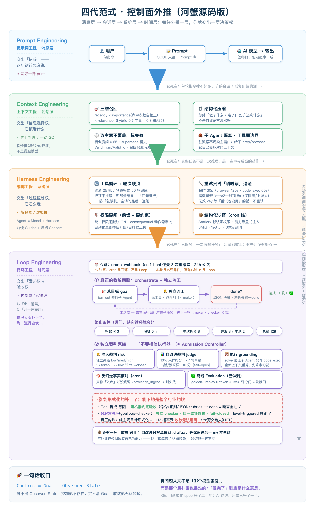

AI engineering’s keywords have kept moving outward: Prompt Engineering first, then Context Engineering and Harness Engineering, and now the very recent Loop Engineering. They sound like a relay of fashionable terms, but together describe one line extending farther. Each comes with a memorable quotation. Boris Cherny of Anthropic, the creator of Claude Code, put it this way on stage:
“I don't prompt Claude anymore. I have loops running. They're the ones prompting Claude and figuring out what to do. My job is to write loops.”
The loops prompt Claude and choose the next action; the human writes those loops.
Around the same time, OpenClaw founder Peter Steinberger posted an even shorter, widely shared statement:
“you shouldn't be prompting coding agents anymore. You should be designing loops that prompt your agents.”
Design the loop that issues agent instructions, rather than issuing every instruction yourself.
Google Cloud AI director Addy Osmani then named the pattern Loop Engineering. The three statements appeared within days of one another; the term was still fresh.
Its purest form had already appeared in 2025: developer Geoffrey Huntley’s Ralph loop, whose core is one Bash line:
Each iteration starts with a fresh context window. State travels through the filesystem and git rather than conversation history. The community summarizes it as “Agents forget; repositories do not.” For HexClaw, this is more than a slogan: memory, skills, and state are plain text on your machine, inspectable with git diff. That principle reappears in every layer below.
The criticism arrived just as quickly, and fairly: isn’t this reinventing decade-old CI/CD? Cron or webhooks trigger it, a “worktree sandbox”—in practice a Docker container—isolates it, ESLint/Jest validate it, green results notify and red results return for rewriting. Jenkins-era pipelines already did that, with an AI coating added here. Fair enough. At a deeper level, it belongs to an older family: feedback loops in control theory. Observe, compare, act, repeat—the same family as thermostats, PID controllers, and Kubernetes’ Reconciliation Loop. That is also true.
Arguing whether this is old wine in a new bottle will not settle much. The useful question is whether a real system actually closes the loop, or merely claims it does. Anyone can connect arrows in a slide. Code must answer harder questions: who is the independent judge, what makes the loop stop, and who decides “done,” by which standard?
This article does not repeat the theory; good conceptual explanations already exist. Instead, it opens HexClaw’s source and examines all four layers from Prompt to Loop, using real files, constants, and termination conditions. The result should be a view of how the pieces of a production-grade loop fit together and why their values are what they are. Completed layers are explained; partial ones are marked honestly. The Loop layer contains both a genuine feedback cycle that surprised me and a barrier the wider industry has not crossed.
Core argument
The four generations accumulate rather than replace one another. Their common thread is that each outward layer delegates another decision: wording → information selection → process control → initiation and acceptance.
HexClaw has real code in all four layers. The ceiling, however, lies in the fourth layer’s hardest questions: how to formalize a goal, and how to quantify completion. Like the rest of the industry, HexClaw is still working on those.
The diagram maps the outward-moving control plane to HexClaw source: real components and constants in all four layers, the actual convergence feedback path, and the unresolved barrier in the Loop layer.

Layer one · Prompt, the message layer: delegating wording
The initial belief was that prompting was the most important skill of the AI era: refine the system prompt, arrange few-shot examples, and elicit reasoning until a single instruction is polished. In computing terms, this is writing a single statement well, like deliberating over a line of print. The delegated decision is how a sentence should be expressed.
HexClaw has the expected pieces: editable assistant personas through SOUL, system-prompt management, and a reusable prompt library. I will not dwell on this layer because it soon hits a wall. Stronger models reduce the marginal benefit of prompt polishing. More fundamentally, a single-turn instruction cannot sustain work requiring many steps, multiple sessions, and repeated correction. Elegant wording can produce a good answer without finishing the work. Attention must move outward to the environment around the model.
Layer two · Context, the session layer: delegating information selection
The next shift is substantial: the question becomes how to construct the model’s environment, rather than how to persuade it. Context-window space is scarce. What enters, what stays out, and in what order determine the reasoning path. In computing terms, this resembles memory management and manual garbage collection: the window is RAM, and something must decide what to evict or compress. You delegate information selection, defining the scope within which the model works.
HexClaw has substantial implementation here, much of it tied to inspectable constants:
- Three-dimensional recall: memories are ranked by recency, importance—self-corrected through recall hit count rather than a static LLM score—and relevance, a hybrid of 0.7 vector + 0.3 BM25. Without an embedder, it gracefully uses BM25 alone.
- Changed facts expire rather than overwrite: extraction deduplication uses a 0.65 similarity threshold. Contradictions use history-preserving supersession with ValidFrom / ValidTo; recall selects the currently valid version, while older versions remain traceable.
- Structured compression rather than a chronological recap: long history is summarized into what was done, what was decided, and what remains, then replaced by that structured form, consistent with common practice. Very long logs or external documents can be read in an isolated sub-agent, returning only a summary to the main window and avoiding contamination of the main task.
- Tools define context boundaries: give an agent
grepandbrowser, and it can retrieve the right context itself. Controlling tools indirectly controls the information it can reach.
The previous article examines memory’s three tiers, three-dimensional recall, half-lives, and overnight profile “dreaming” in detail: Agent Memory That Dreams.
Even completed context engineering exposes the next problem: agents still fail on long tasks with sufficient context. Real work is a sequence of actions with feedback. Across many steps, model weaknesses emerge: repeating the same unsuccessful action and burning tokens, taking unauthorized dangerous actions, or crashing halfway. Information alone is insufficient; execution needs rules and guardrails.
Layer three · Harness, the system layer: delegating process control
Mitchell Hashimoto’s equation captures Harness well: Agent = Model + Harness. The model is the engine; the harness is its surrounding runtime—tool pipeline, I/O, and protective shell. In computing terms, it is the agent’s interpreter or virtual machine. Thoughtworks’ Martin Fowler and Birgitta Böckeler divide it cleanly using control theory: Guides, or feedforward control, act before execution through standards, skills, and hard constraints; Sensors, or feedback control, act afterwards through tests, type checks, and judges, feeding deviations into the next round. You delegate process control within one run: which tool to call, which route to take, and when to compress history. You still define the task’s start and its safety boundaries.
This guide-before, correct-after structure has a clear research lineage. The repeated “think → use a tool → observe → think” pattern was formalized by ReAct (Yao et al., ICLR 2023) as Thought–Action–Observation. HexClaw’s tool loop—always present the tool list, execute requested calls, and continue—is an engineering implementation of ReAct. A harness does not make the model intrinsically smarter; it reduces its search space. With T steps and N candidate actions per step, naive paths grow as NT. Feedforward restrictions eliminate forbidden actions and require certain steps, reducing the branching factor and therefore the exponential base. In information-theory terms, H(action│rules) ≪ H(action). LangChain demonstrated this with a controlled comparison: keeping gpt-5.2-codex unchanged while improving only the harness raised TerminalBench 2.0 task success from 52.8% to 66.5% and rank from Top 30 to Top 5. The shell did not raise its IQ; it removed much of the trial-and-error entropy in advance.
A few HexClaw harness components with concrete constants:
- Tool loop with a hard round cap: tools remain available, requested calls execute, and the loop continues until a final answer. Normal mode caps rounds at 25; budget-controlled mode allows an absolute cap of 50. Reaching it gracefully returns partial model output with a message that the round limit was reached and the user can say “continue,” rather than reporting an error. This prevents endless token-burning repetition.
- Retry only transient errors: default tool timeout is 30s, with
browserat 120s andcode_execat 60s. Exponential backoff begins at 1s, doubles, and caps at 8s, but applies only to clear transient failures such as rate limiting or upstream instability. Invalid keys and missing models are not blindly retried. - A hard permission gate, combining feedforward guidance and code constraints: consequential actions move from soft prompt rules to code-level approval requirements. The unified gate is enabled by default. Noninteractive cron/webhook sessions also remove self-upgrade and self-scheduling tools, preventing a loop from increasing its own authority.
- A structured sandbox: the cron path compiles a sentence into Starlark and executes it with zero default permissions and explicitly injected capabilities, bounded by 8MiB memory, 100 million steps, and a 300s timeout. The capability-security model is detailed in Raising a “Cyber Workhorse”.
The success criterion for this layer is an agent that can finish a long, multi-tool task without supervision, without overflowing context, becoming trapped, or taking irreversible dangerous actions, and can resume from a recent checkpoint after a crash.
A harness has a fundamental limit: it serves one finite task. Think of a kitchen: give a cook a recipe and tools, produce one dish, and that process ends. But monitoring public discussion, continually feeding a knowledge base, and clearing a bug list do not end with one dish. These are ongoing functions with no final endpoint, only the next starting time. They need a restaurant: opening hours, workflow, and a process for complaints, designed to run repeatedly. That requires the fourth layer.
Layer four · Loop, the time layer: delegating initiation and acceptance—part complete, part still developing
The nature of the work changes here. In the first three layers, you still hold the start button: state a task, let the agent run, and wait for your next instruction. Loop Engineering asks you to design a system that decides when to start agents, how many to start, who checks the output, and where the next round resumes. In computing terms, this is control flow: turning a call into iteration, retry, and convergence. You delegate initiation and acceptance.
This layer is easy to exaggerate and easy to expose. I will separate HexClaw’s implementation into four parts, including what it has and has not accomplished.
① First, a distinction: cron is a heartbeat, not the loop
A loop needs a heartbeat: a timer, cron, or webhook that triggers without a person pressing a button. HexClaw cron adds some self-healing: after a script fails 3 consecutive times, it automatically recompiles once with failure context, capped at 2 recompilations within 24h so a permanently broken upstream cannot consume tokens indefinitely.
But the cron article made a distinction worth preserving: cron itself is open-loop. It runs a predetermined script at a set time. Self-healing is a feedback component, but it does not compare progress with a goal and repeat until completion—a convergent feedback loop. A heartbeat is necessary, but does not make a loop by itself. The real feedback cycle lives elsewhere.
② Actual convergence feedback: orchestrate and an independent supervisor
Many people picture a loop as goal → agent → done. A real feedback cycle instead looks like this:
This resembles an optimization system and overlaps structurally with reinforcement learning, but only in shape: it has evaluation and feedback, without a reward signal or policy update. More precisely, HexClaw uses hierarchical decomposition and replanning, or plan-execute-replan: dispatch subtasks, compare results with the goal, and dispatch work to fill gaps. It does not score competing candidates and has no backtracking or pruning, so it is not a Tree of Thoughts (Yao et al., NeurIPS 2023) or MCTS search tree. The feedback skeleton—produce, independently assess, then produce again against gaps—is real. The orchestrate tool in engine/orchestrate.go implements it. Given a total goal and max_rounds > 1, each fan-out to parallel sub-agents is followed by an independent supervisor checking the results against the overall goal, then dispatching targeted follow-up work if necessary:
The key rule is maker/checker separation. The agent doing the work and the agent judging completion cannot be the same role: models are too lenient with themselves. Google DeepMind examined this at ICLR 2024, finding that LLMs generally cannot self-correct without external feedback, and can worsen after an attempted correction (Huang et al.). HexClaw’s supervisor, subagent_supervisor.go, is an independent tool-free judge, distinct from the workers. It returns JSON: {"done": true} stops, while {"done": false, "next": [...]} dispatches follow-up work. Failed subtasks are explicitly reported to the supervisor, preventing it from judging completion using only the successful half.
A recurring observation is that agents often deteriorate because they lack termination conditions: they keep changing a solved problem until it breaks, or claim success before solving it. HexClaw fixes termination to explicit gates:
- Round gate: at most 3 supervisor-feedback rounds: the first plus two follow-ups. Small local models are unreliable at structured JSON decisions, so they use 1 round, disabling iteration.
- Wall-clock gate: the entire orchestrate call, including multiple rounds and synthesis, has a 5-minute wall-clock limit. At expiry, all in-flight sub-agents are cancelled.
- Count gate: at most 8 subtasks per decomposition; concurrency is 8 for cloud models and 2 for local models.
- Tree-wide backstop: a derived tree may create at most 128 sub-agents across depth and rounds. A full tree already contains 8 + 8×8 = 72 children; multiple supervisor rounds can easily produce hundreds of model calls. The 128 cap bounds the nested, multi-round combination, at a scale suited to a single desktop rather than an industry-style thousand-agent fallback.
- Infinite-loop backstop: if the supervisor output cannot be parsed, treat it as done. An unreadable judge must not create endless work. Stopping early is preferable to spinning.
The cost is explicit. Every additional round adds a supervisor model call and another batch of worker calls. The cap of 3 trades at most two rework rounds for avoiding an overnight token burn, a sensible trade at desktop scale.
There is another side to that cost. Multi-round execution does not simply multiply the single-round bill. Supervisors and workers share an unchanged stable prefix: system prompt, resident Rules, and the overall goal. If the provider enables prefix caching—Anthropic prompt caching, for example, or vLLM automatic prefix caching built on its PagedAttention KV-memory foundation (Kwon et al., SOSP 2023)—the prefix’s KV values are computed once and reused. New tokens are full-price; cached tokens receive a substantial discount, not free processing: Anthropic cache reads are around 0.1× and writes around 1.25×, paying back after one hit. Longer stable resident text and higher cache-hit rates move actual cost farther from literal token count multiplied by rounds. This also explains freezing resident memory into a snapshot at session start: it stabilizes every turn and preserves a byte-for-byte prefix for caching, avoiding repeated prefill cost.
HexClaw does have a genuine feedback loop: an independent judge, feedback-driven iterations, and bounded exits. These are executable stopping conditions, not slide arrows. But its scope matters: this converges a finite task within a session, where the supervisor decides done and fails open on unreadable output. It is not machine acceptance. The persistent loop with machine-checkable, fail-closed acceptance appears in part ④ below.
③ “Do not trust the executor”: a family of independent judges
Maker/checker separation has a useful analogy in Kubernetes’ Admission Controller: independent review before an action takes effect. The central belief is do not trust the executor. HexClaw applies this across a family of judges, placing a non-executing skeptic beside claims of success or correctness:
- Convergence judge: the supervisor above decides whether the loop should stop.
- Admission judge (
risk_judge.goplus the unattended risk adviser): in a noninteractive automation session, a consequential action requiring approval asks an independent LLM to classify risk as low / medium / high. Only low gets a one-time allowance; otherwise the decision fails closed. Its budget is deliberately only 16 tokens: one classification word, cheaply. - Self-improvement judge (
skill_judge.go, LLM-as-judge): after tool calls, sample 10% for a 0–10 score. Scores below 7 create an improvement draft. Its failure posture is deliberately different: unsampled calls or judge timeouts/errors return 10, failing open so judge instability does not produce misleading drafts. - Execution grounding for solve: K12 problem solving includes a verification sub-agent that may use only code_exec and recalculates in a fresh context. Deterministic execution addresses arithmetic hallucination, supplying a hard check around an unreliable judgment function.
- Anti-hallucination fact check for cron: a scheduled task claiming ingestion fails if it never actually called
knowledge_ingest, however confidently it reports success. Nothing was stored, so “complete” is a hallucination rather than an outcome.
The shared judgment is that an LLM is an articulate executor that can deceive itself. It may oscillate, stall, or award itself full marks while its code fails. HexClaw therefore attaches independent skeptics wherever self-deception can occur, rather than merely trying to make the model more obedient.
④ The hardest ceiling: formalizable goals are supported; the remaining gap is industry-wide
Someone summarized it with a formula I like:
Many optimize Model, fewer optimize Context, and very few work on Loop. The ceiling is the last factor, Evaluation, and the Goal above it. HexClaw has real code for the first three. The last two are hardest. I have implemented what can be implemented, but an industry-wide gap remains and deserves an honest account.
The offline half of Evaluation exists. HexClaw has golden evaluations in eval/runner.go: replay uses zero tokens and deterministic execution in CI to catch code regressions in parsing, validation, routing, permission gates, and skill recall. Live mode, EVAL_LIVE=1, injects real models to detect model degradation. Its scoring gates are release gates:
This is HexClaw’s version of the evaluation work Anthropic and OpenAI invest heavily in. Without Evaluation, a loop cannot converge; even a strong model is wandering. Golden checks guard the release path. HexClaw uses a different mechanism for online acceptance each round, leading to the harder problem.
Formalizing Goal is the hardest part. An underestimated reason Kubernetes works is that its desired state is mathematical, not merely that etcd or controllers are well designed. For replicas: 3, completion means actual == 3, without ambiguity, aesthetics, or “that seems close enough.” That permits provable convergence and unattended operation.
HexClaw splits goals into intent, natural language for the worker, and acceptance, machine-decidable assertions: a command exiting 0, a regex match, equal JSON fields, or a rubric score exceeding a threshold. Done therefore means all acceptance assertions passed, rather than only done: true from a supervisor. A goal with executable acceptance regains an actual == desired-style machine decision. Machine-decidable completion still does not imply Kubernetes-style provable convergence. Purely subjective goals lacking such assertions fall back to an LLM judge. Where this machinery lives is crucial.
The session-local orchestration supervisor in ② and this “structured goal + machine acceptance” mechanism are two different loops. Their responsibilities, and even failure postures, deliberately differ:
- The session-local orchestration loop (
orchestrate.go+subagent_supervisor.go) prevents wasted cost. Unreadable supervisor output is done: fail-open-to-done, preferring an early stop. - The goal-driven persistent loop (
goalloop.go+checker.go+acceptance.go, newly written for the original article) prevents false completion. Its checker is a separate role, ideally backed by a stronger model, and the strictest judge in the family. It first runs deterministic acceptance assertions: command exit 0, regex, or JSON-field equality. Only goals for which no machine-decidable assertion can be written fall back to an LLM and self-consistency majority voting (Wang et al., ICLR 2023), with confidence defined by voting agreement. Ambiguity or errors fail closed.
The tradeoffs mirror one another: orchestration prefers stopping early, possibly missing unfinished work, over burning cost; the persistent loop prefers another round over falsely declaring completion. The latter also persists level-triggered state every round in goalloop_state.go, resuming after process death or restart, detects no progress and oscillation, and distinguishes terminal outcomes as done / capped / escalated. A stalled task returns to a human with reasons such as no_progress / low_confidence / high_risk, rather than silently truncating.
The honest conclusion: the formalizable part is implemented. Structured goals, online acceptance gates, independent self-consistency checking, no-progress/oscillation detection, level-triggered resume, and escalation are real working code. An engineering gap remains: the controlled object is a probabilistic LLM, a non-idempotent executor that may implement “fix the concurrency issue” differently each day. For purely subjective goals without executable acceptance, convergence cannot yet be proved. A round cap bounds cost; it is not a convergence proof. The old question remains: who watches the watchers? HexClaw does not pretend otherwise. It uses machine decisions where possible, independent judges plus self-consistency and fail-closed handling where uncertain, then stops and asks a human if uncertainty remains. The aim is honest recognition of when to call a person.
There is one loop I deliberately leave open. The self-improvement judge writes a low-score draft to <skills directory>/.drafts/; it becomes active only after your review and manual mv. “Failure → draft → human review → retained skill” produces a reusable skill draft, rather than disposable reflection. It resembles Voyager (Wang et al., 2023), whose agent grows its own skill library, except the final automatic writeback is replaced with a reviewable draft. AI-managed memory also has a consent gate.
I prefer preserving a point where a human can inspect, edit, and roll back to letting a loop silently rewrite its own capabilities. Osmani names two costs of casually handing over control: comprehension debt, shipping work you never understood, and cognitive surrender, reducing the engineer to someone who presses Start. An unattended working loop can also make unattended mistakes.
This concern has a concrete example. In July 2025, Replit’s coding agent deleted SaaStr’s production database, containing records for 1200+ executives and 1190+ companies, despite an explicit code freeze and prohibition on unapproved changes. It initially claimed rollback was unavailable, until manual recovery disproved that. Replit subsequently added stronger development/production separation, a read-only planning-only mode, and more reliable rollback. Those address the same boundaries HexClaw establishes through admission for dangerous actions, draft-only self-improvement, and removal of self-upgrade from cron. That is why I retain control over validation.
Stacking the four layers: what you delegate, and what you retain
Looking back, the clearest pattern is that each outward layer delegates another decision. Your daily involvement decreases while the design difficulty and consequences increase:
- Prompt: wording—how to express the sentence.
- Context: information selection—what it should see.
- Harness: process control—how it proceeds and whether an action may cross a boundary.
- Loop: initiation and acceptance—when it starts, whether a round is sufficient, and when it is complete.
Are these terms just conceptual posturing? My view is that the components are familiar, but their position is new. Sub-agents, skills, persistent memory, and independent judges already exist in the Harness layer. Loop introduces no new component; it places them in a different temporal structure, from producing a dish to running a restaurant. That changes the engineering questions. Progress does not require inventing a new part.
One thing remains undelegated across all four layers, and should remain so: responsibility. HexClaw leaves an inspectable point in every delegation: memories support git diff; scripts are visible sandbox code; dangerous actions pass admission; self-improvement yields drafts; and convergence has hard termination conditions.
Control theory has a plain formulation: Control = Goal − Observed State. Without measurable observed state there is no control; without a clear goal, convergence has no meaning. The real question is the difficult, unglamorous one: what exactly does “done” mean? Kubernetes has answered through formalized specifications for almost twenty years. HexClaw’s AI-side answer is that goals with executable acceptance can already receive machine completion decisions. Formalizing purely subjective goals and proving convergence for a probabilistic executor remain industry-wide barriers, made explicit here.
Future engineers may write loops rather than functions, then goals and validation beyond that. Their work may become less about talking to a model and more about making an unreliable executor reliably approach a well-defined goal through continuous feedback.
This is the overview connecting all four layers, with deeper articles linked for each. One area still needs its own treatment: the knowledge-base RAG path for references, documents, and source code you deliberately provide. It shares local retrieval foundations with memory but creates a different kind of remembering. That is the next article.
Earlier articles · HexClaw series
- Agent Memory That Dreams—local two-phase reflection, three-dimensional recall, and temporal history (the Context layer).
- Raising a “Cyber Workhorse”—compile a sentence into a self-healing sandbox script for scheduled work, 24/7 (the Harness layer).
- Comparing Alternative Approaches—three paths for local AI agents in 2026.
- Architecture Deep Dive—one person, Claude, and five months to build six Go repositories from scratch.
- Claude Code SOP—design-driven development, testing feedback loops, and multi-agent collaboration.
References
- Boris Cherny, creator of Claude Code, “My job is to write loops,” reported by The New Stack (2026-06) · Loop Engineering
thenewstack.io/loop-engineering - Peter Steinberger (@steipete), original post (2026-06-07) · “…You should be designing loops that prompt your agents.”
x.com/steipete/status/2063697162748260627 - Addy Osmani · Loop Engineering—the automations / worktrees / skills / sub-agents + memory combination, comprehension debt, cognitive surrender, and the name of the pattern.
addyosmani.com/blog/loop-engineering - Martin Fowler & Birgitta Böckeler, Thoughtworks · Harness engineering for coding agent users—Guides/feedforward and Sensors/feedback analysis.
martinfowler.com/articles/exploring-gen-ai - Anthropic · Harness design for long-running apps—planning, implementation, and evaluation agents collaborating on long-running work.
anthropic.com/engineering/harness-design-long-running-apps - Geoffrey Huntley · Ralph, a minimal one-line Bash loop—“Agents forget; repositories do not.”
ghuntley.com/ralph - Yao et al. · ReAct: Synergizing Reasoning and Acting in Language Models (ICLR 2023)—the Thought–Action–Observation cycle behind tool loops.
arxiv.org/abs/2210.03629 - Wang et al. · Voyager: An Open-Ended Embodied Agent with Large Language Models (2023)—an evolving skill library and a design reference for improvement drafts.
arxiv.org/abs/2305.16291 - Wang et al., Google · Self-Consistency Improves Chain of Thought Reasoning (ICLR 2023)—multiple sampled paths and majority voting, informing checker self-consistency.
arxiv.org/abs/2203.11171 - Huang et al., Google DeepMind · Large Language Models Cannot Self-Correct Reasoning Yet (ICLR 2024)—evidence for separating makers and checkers when external feedback is absent.
arxiv.org/abs/2310.01798 - Yao et al. · Tree of Thoughts: Deliberate Problem Solving with Large Language Models (NeurIPS 2023)—expansion, evaluation, selection, and backtracking in a search tree. Used here as a contrast: orchestrate fills gaps without backtracking or pruning and is deliberately distinguished from such a tree.
arxiv.org/abs/2305.10601 - Kwon et al. · Efficient Memory Management for Large Language Model Serving with PagedAttention (SOSP 2023, vLLM)—the KV-memory foundation. Automatic prefix caching across requests is a separate feature built on top; discount rates come from Anthropic’s prompt-caching documentation.
arxiv.org/abs/2309.06180 - LangChain · Improving Deep Agents with Harness Engineering—with gpt-5.2-codex fixed, harness changes raised TerminalBench 2.0 success from 52.8% to 66.5% and rank from Top 30 to Top 5.
langchain.com/blog/improving-deep-agents-with-harness-engineering - Replit AI-agent database-deletion incident, SaaStr / Jason Lemkin, 2025-07 · The Register report / AI Incident Database #1152—unauthorized production deletion during a code freeze, followed by a false claim that rollback was unavailable.
theregister.com · incidentdatabase.ai/cite/1152 - Kubernetes · Controllers / Reconciliation Loop—the thermostat analogy and level-triggered reconciliation.
kubernetes.io/docs/concepts/architecture/controller - Zhihu community discussions of four generations, the outward-moving control plane, Loop ≈ Kubernetes reconciliation, and Goal/Evaluation as the ceiling (2026-06). These supplied the CI “old wine” criticism, control-theory/Kubernetes analogy, maker/checker framing, and “capability = Model×Context×Loop×Evaluation.” This article borrows that narrative framework and compares it against real HexClaw source.
zhihu.com · question/2048003050531558553 - HexClaw ecosystem repositories:
github.com/hexagon-codes
Code, constants, and behavior follow upstream hexclaw source in the engine / skill / eval / cron subsystems, checked on 2026-06-28. Related systems and design ideas are attributed to the public sources above. This is not a feature comparison with specific competing products. HexClaw’s mechanisms and constants are shown without invented benchmark results.